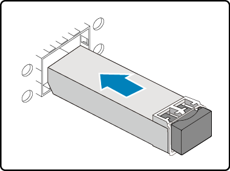
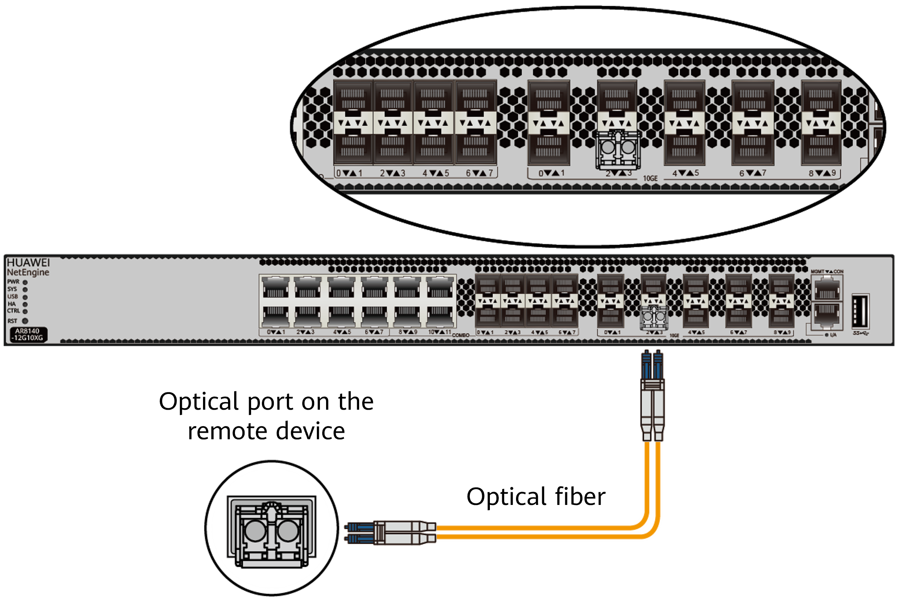

Connecting Optical Modules and Optical Fibers
Context

Invisible laser beams will cause eye damage. Do not look into optical fiber ends or optical module ports without eye protection.

- The router must use Huawei-certified optical modules. Non-Huawei certified optical modules cannot ensure transmission reliability and may affect service stability. Huawei is not responsible for any problem caused by non-Huawei certified optical modules and will not fix such problems.
- Do not overbend optical fibers. The bend radius of an optical fiber must be no less than 40 mm.
- Do not bundle optical fibers too tight. Otherwise, the transmission performance of optical fibers may be degraded, affecting the communication quality between devices.
Procedure
- Insert an optical module into an optical port smoothly until you hear a click.

If an optical module cannot be completely inserted into an optical port, do not push it with force. Turn the optical module over and try again.

- Remove the dust plug from the optical module.
Place the dust plug in an appropriate place. After optical fibers are removed from the optical module, cover the optical module with the dust plug to protect it from dust.
- Before installing optical fibers, attach temporary labels to both ends of each optical fiber to identify them. For details about how to fill in optical fiber labels, see Engineering Labels for Optical Fibers.
- Remove the dust caps from the fiber connectors. Connect one end of the optical fiber to the optical module and the other end to the remote device.
Connect the receive and transmit ends of a fiber connector to the receive and transmit bores of the optical module.
When connectors are hard to reach due to high port density, use an optical fiber plier (delivered with the router) for assistance. (This operation applies only to AR8700 series routers.)

- Arrange the optical fibers to make them parallel and bundle them with fiber binding tape at a spacing of 150–300 mm.
- Replace all temporary labels on the optical fibers with permanent labels.
Follow-up Procedure
You are advised to hang the optical fiber plier at an appropriate position inside the cabinet using a rope for later use. (This operation applies only to the AR8700-8.)